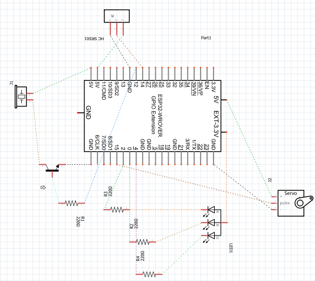

This lab assignment is about being able to properly use the combination of Thonny, ESP32, and components such
that
the ESP32 can detect a burglar and trigger a siren, some lights and a paper hand waving.
List of Hardware Compnents
18 x wires
1 x Servo
1 x RGB LED
3 x 220-ohm resistor
1 x Passive Buzzer
1 x NPN Transistor
1 x 1k-ohm resistor
1 x HC SR04
ESP 32
Circuit Diagram

Breadboard Diagram
Breadboard Settings
Video
Source Code
Project #2
Description of what the lab assignment is about
This lab assignment is about being able to properly use the combination of Thonny, ESP32, and components such
that
we can detect when sopmeone falls and a message appears according to the direction of the fall.